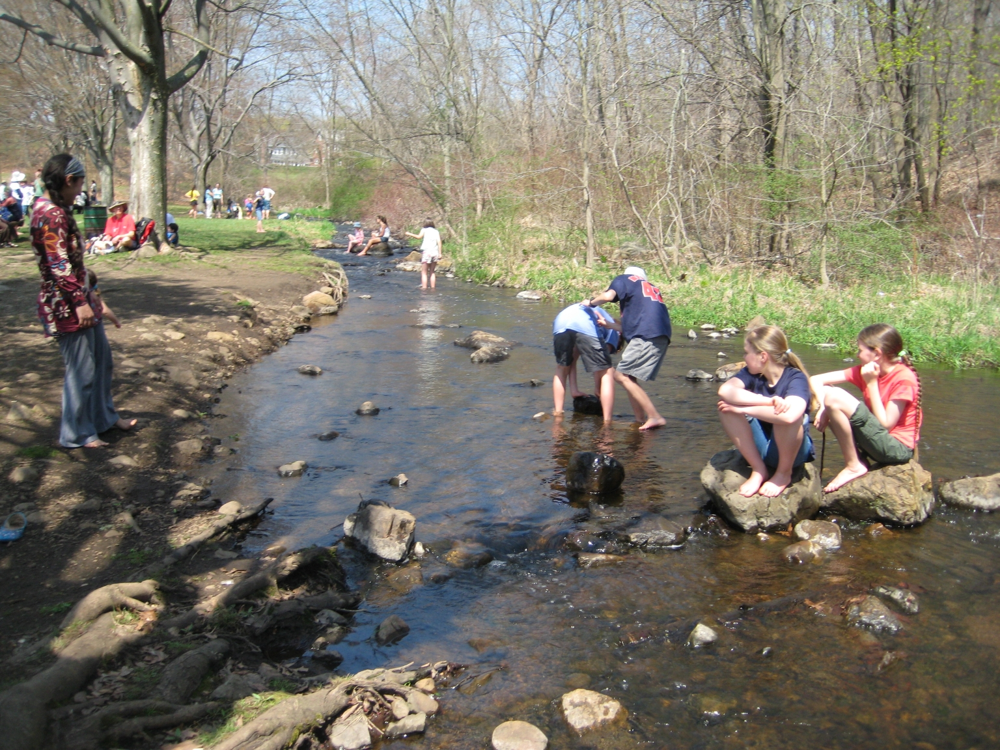
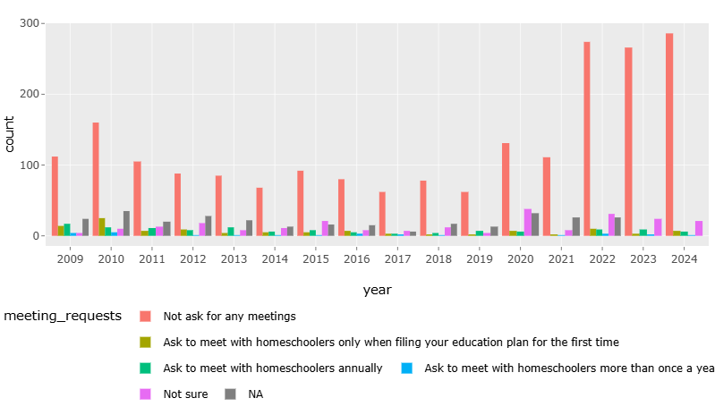

News & Events
In Praise of Park Days
By Roberta Van Vlack
Park days were a staple of my family’s homeschooling life. With four kids, these informal, weekly gatherings provided everyone (even mom) with an opportunity to make friends and socialize in a way that no co-op we found ever could. Park days were the one constant in our schedule from year to year. At one point, my teenage daughter did the recorded version of Spanish 3 because the live class would have interfered with park day. One has to have priorities, you know.
Park days are a melting pot. Homeschooling in Massachusetts attracts a pretty diverse group of people, and the families at our local park day have come from all different backgrounds and perspectives. I have seen the same scene countless times—kids of different genders and ages running around together. And not just running but playing organized games without any adult input. If you have doubts that homeschoolers can be properly socialized,
this is the place to go to put those doubts to rest. In my experience, homeschooling kids are incredibly patient and accepting of others who are different in any way. They are used to being with kids who don’t fit the usual mold. Read more...
AHEM Questionnaire on Homeschooling Policy and Practice
Every year we do surveys to see what issues homeschoolers in Massachusetts are having and how reporting requests have changed from year to year. Whether you have had issues reporting in your town or not, your responses help us keep track of trends and better serve Massachusetts homeschoolers. Please consider taking a few minutes to respond. Results will be published in an upcoming AHEM newsletter.
Thank you for your participation!
AHEM Needs You!
Over the past few weeks, we have shared a bit about what AHEM does and the impact on our MA homeschool community (Legislative Watch, Education, One-on-One Support).
AHEM isn’t a large corporate entity with a huge support staff, a multimillion-dollar budget, or a marketing department. It’s currently four people—three board members and one volunteer—who meet once a month on zoom, talk about issues facing MA home educators, divvying up responsibilities, and figuring out how we can best serve you.
We share a commitment to helping people explore and strengthen their understanding of homeschool regulation, approach, and benefit. Sometimes we’re not certain of our reach or impact, but we keep showing up with the faith that the initiatives we work on are helpful in some way, that being a go-to resource for more than twenty years is what continues to allow homeschoolers to trust in themselves and each other, in the short term and over the long haul. Read more...
AHEM’s Mission: One-on-One Support
Over the past weeks we have explored ways that AHEM supports your homeschooling family through advocacy and information. AHEM is also a critical resource if things aren’t going well. Have you ever received a letter from the school threatening DCF action because you haven’t complied with overreach? I have. And it was anxiety producing, to say the least. Even as a seasoned homeschooler (it was my fourth year!) I was uncertain about what to do, what my rights were, and how to best talk to the school in a way that would get results.
AHEM was there to support me and continues to support other families each month. Our volunteers have extensive experience and can offer resources and advice on how to approach a number of different issues with the school system. AHEM also has a state-wide view, keeping its finger on the pulse of what is going on in different communities around the state. When necessary, AHEM convenes meetings of homeschoolers within a town to strategize how to best respond to new school requests, as we did recently for Medford homeschoolers faced with a new district form with new requests. Each year, AHEM receives 100-200 individual emails or calls through our One-on-One contacts program. We strive to respond to each one within 24 hours. Many are seeking information on how to begin homeschooling or ways to connect with their local homeschooling community. Others have more complex questions about their district’s policies, forms, and requests. Read more...
AHEM’s Mission: Education
AHEM is the most quoted resource on how to homeschool in Massachusetts. We have years of experience and articles on issues ranging from how to get started and ideas on connecting with other homeschoolers to what to do if you are facing push back from your local school. We are in the process of revamping our website to make all of this information even more accessible. Read more...
AHEM’s Mission: Legislative
So you get AHEM newsletters, you’ve used the AHEM site to answer some critical questions, or you’ve heard other homeschoolers talk about AHEM at a park day. But what do you really know about who and what AHEM is? We’d love for you to learn more!
AHEM began as a collective effort of a few homeschooling parents dedicated to protecting and advancing educational choice for their families. Over the next twenty years it has become a critical support to home educators across Massachusetts! Over the next few weeks, we will highlight some of the work that AHEM does in support of the important work that you each do in your home with your children. Our hope is that you will understand the role you can play in keeping AHEM alive.
AHEM’s mission is to gather and disseminate information about homeschooling in Massachusetts through education, advocacy, and events. One critical thing we do is to keep an eye on legislation working its way through the legislature that could affect homeschoolers across the Commonwealth. This year we have been carefully tracking bills that:
- Propose changes to the minimum and maximum compulsory school attendance ages (MA H524, MA S437)
- Would alter current practices by introducing a new oversight framework that would shift how homeschoolers are monitored and evaluated potentially altering long-standing practices and requirements (MA H518)
- Specifically mention homeschool and home educated students (MA S437, MA H712)
FAQ: Approval
This time of year we get a lot of questions that have to do with approval—Do I need it? What if my town doesn't send a letter? Can I start homeschooling before I have approval?—so we thought we'd try to tackle them all at once. As always, if you have further questions or need help working through particulars, AHEM is here to help. Read more...
AHEM's Sample Education Plan, Annotated
The first step to start officially homeschooling in Massachusetts is to submit an education plan to your local school superintendent. We suggest submitting your education plan a couple of weeks before school starts if you can, but you can remove a child from school at any time during the year.
AHEM offers a sample education plan. This plan represents the minimum that has been accepted as written by some school districts in Massachusetts. It is meant to be used as a template. Please edit it to reflect what you plan to do in your homeschool. For example: delete or add subjects, indicate specific materials you plan to use, specify your form of evaluation, etc.
Below we present our Sample Education Plan in a slightly new format. This template includes all the information from the Sample Ed Plan you may know and love but with some added notes and links to help you find more information, should your town ask for additional information. As always, if you have questions about the requests your town is making, you can reach out to AHEM at any time for one-on-one support. Read more...
Step One: DON'T PANIC
The guidebook known as The Hitchhiker’s Guide to the Galaxy (from the novel of the same name) is said to have on its cover these words: DON’T PANIC.
If I were making a guidebook on homeschool reporting, I would take a page (pun intended) from Douglas Adams and start the same way.
Maybe your town has a new homeschool policy. Maybe they are making requests they never have before. Maybe instead of approving your education plan, they are asking for more information. Maybe you are just new and nervous about sending in your first education plan.
Whatever your situation, the first step is the same: DON’T PANIC.
What you do next may depend upon your circumstances, but here are some suggestions (in no particular order): Read more...
Changes to the AHEM Website (& a Volunteer Opportunity!)
As of 2025, AHEM is 22 years old. In that time we have published many newsletters and articles and we hope they have been helpful to decades worth of homeschoolers across the state. Our website is a big part of our mission. It is often the first place prospective homeschoolers go to find out what is required. It is our connection to the world. In all that time the amount of information on our website has expanded and we understand that it can at times be cumbersome to navigate. At the same time, we are looking to transition to a new webmaster. As we do so, we are looking to change platforms and designs.
We are looking for a volunteer for the one-time job of transitioning and creating our new website. We have a plan and a catalog of articles but we need someone with the technical skills. If you think that this is something that you could help with, please fill out our volunteer application by July, 10, 2025.
We are looking to create a site on Wordpress that can be easily managed by volunteers. We are looking for somepne to design the Wordpress site, and to move over our content.
If you think that this is something you could do, please reach out to us using our volunteer application. If website design is not within your skill set but you would like to help with AHEM's mission in another way, you can also use that application. We are always looking for Town Point People, people to write articles, help with mailings, work on graphic design projects, help monitor legislation, and more. AHEM only works because you do!
Homeschooling for College-Prep - Part 2
Earning Credit Early
by Erin Cyr
In Part 1, Erin looked at your role as the guidance counselor as your child prepares for college. This time, they share with us how their child earned college credit early to save money in the long run.
Lots of homeschooling families have one breadwinning parent or one who works full-time while the other works part-time. We need to save on college wherever we can! For my homeschooler, the goal has been to get an excellent education through college without getting stuck with insurmountable debt after graduation. Read more . . .
Homeschooling for College-Prep - Part 1
by Erin Cyr
What Colleges Expect
First off, college is not for everyone, and for some folks, right after high school might not be the best time to go to college. I started college right after high school, but it wasn't the right time for me, and I eventually graduated at 28 years old. That being said, I have been homeschooling a kid who would very much like to go to college. In fact, it has been her driving force for the last few years, and it’s been fun to be along for the ride.
Record-keeping
For me, the key to not feeling overwhelmed has been good record-keeping. There are lots of homeschooling styles available to us, which is awesome. If you think your kid might want to go to college, it’s good practice to keep track of what your kids are up to in terms of learning and activities, no matter what type of homeschooling you do. That might mean keeping track of classes and grades for you, and/or slowly building a record of activities, volunteering, sports, etc. You want to document what you’re doing at the time instead of looking back over four years and guessing at how many hours they spent doing each thing, or what they got on that final in biology two years ago. Read more...
Survey Results: Forms, Documentation, and Registration
We set up the survey to collect empirical data about:
- the use of online forms to submit education plans
- the request for documentation beyond an education plan
- the request to register a homeschooled student
We had responses from 285 homeschoolers in 50% of towns in Massachusetts. Thanks to all who took time out of their day to fill out the survey. Read more ...
Frequently Asked Questions: End-of-Year Evaluations
It's that time of year. Many of us are finishing up one school year and thinking about reporting for the next. Whether this is your first year reporting or you are an experienced homeschooler, AHEM has answers to all your evaluation questions. Read more...
Meet Massachusetts Homeschoolers: Sajjona's Story
by Heidi Murphy
Meeting Sajjona
Parenting does not come with a manual. Everything parents experience is a learning process with their child. There will be bumps along the way. Yet, the child grows and develops, and as a parent one enjoys every moment and every adventure. However, having a child with unique needs and a life-threatening illness has parents navigating like a private investigator. Being heartbroken and loving your child at the same time is like being on a roller coaster ride of emotions. We were told our child had been born with a rare medical condition called Trisomy 18. She was deemed “incompatible with life.” We were told by the geneticist, “She will live two weeks if you are lucky.” We relied heavily upon our faith in God. This trust in Him got us through our darkest days. Weeks turned into months and months turned into years. Sajjona Murphy is now seven-and-a-half years old and not just surviving—she is thriving. Read more. . .
In Praise of Park Days
By Roberta Van Vlack
Park days have long been a staple of my family’s homeschooling life. With four kids, these informal, weekly gatherings have provided everyone (even mom) with an opportunity to make friends and socialize in a way that no co-op we found ever could. Park days were the one constant in our schedule from year to year. (My high school age daughter did the recorded version of Spanish 3 because the live class would have interfered with park day. One has to have priorities, you know.) Read more ...
The Socialization Question
by Roberta Van Vlack
If you have even considered homeschooling, you have probably had the S-word thrown at you. The first thing I always recommend when someone asks the dreaded question What about socialization?
is to ask them what they mean by that term.
I’d like to suggest that there are three main ways that people use the term. Socialization can mean simply social time i.e. time spent with peers. It can refer to specific habits and practices which people are expected to learn and use. I am thinking here of things like standing in line, saying please and thank you, and more subtle social skills like how to participate in a group discussion. Lastly, socialization can refer to one’s ability to be relational—to form, build, and negotiate relationships. Read more...
Quiz: Is It Overreach?
How well do you know Massachusetts homeschooling regulations? Take our quiz: “Is it Overreach?” to find out.
Independent Homeschooling
Defining AHEM’s Mission in a Changing Landscape
AHEM believes that informed and active homeschoolers are their own best advocates in maintaining the right to independently homeschool. “Independent” does not mean doing it alone. Homeschoolers have long used the resources of their community to augment their experiences. Co-ops, groups of families who come together and share in educating their children, have also been a part of homeschooling for a long time. Read more...
Protecting Independent Homeschooling: A New Webpage from AHEM
Since 2003, our mission at AHEM has been to advocate for independent homeschooling across the Commonwealth. We are happy to say that, while we are by no means the least regulated state, homeschool reporting remains relatively easy for most and there have been no significant changes in the law for quite some time. We are aware, however, that there are always changes in the homeschool landscape and that this may cause concern for some. With that in mind, we have revamped our website to include a page specifically devoted to homeschool advocacy and our mission to preserve the freedom we currently enjoy. On the page “Protecting Independent Homeschooling,” you can find articles about homeschool advocacy, issues of concern, and stories of homeschoolers who have advocated for their rights. In the coming months, we will be adding to this page, discussing questions like: “What is ‘independent homeschooling’?” and “What about homeschool funding?” Read more...
Connecting with Others: Town Point People
Would you like to help connect homeschooling families in your town or area? Are you wondering who is new in your area, or how you can support new families?
AHEM keeps a list of local, independent volunteers known as Town Point People (TPPs). The purpose of TPPs is social. TPPs are there to help homeschoolers make local connections and find resources and groups near them. There are more than 300 towns in Massachusetts. So far we've got about a tenth of those covered so there are lots more out there and we need your help to make sure all homeschoolers in MA can be connected with someone local.
If your town is listed here, get in touch and we can connect you to the TPP in your town.
If your town isn't listed yet, that means we are still looking for a local contact. Read more here if you would like to find out more about being a TPP yourself.
In either case, you must be an active subscriber to AHEM emails.
Forms, Documentation, and Registration
Are towns asking for more documentation than they used to? How many towns request forms or applications? Your answers help us know what is happening across the state and if homeschoolers are really being asked for more or not. If you reported as a homeschoolers in Massachusetts for this current school year, please take a few minutes to fill out our Forms, Documentation, and Registration survey. Even if you had no issues in your town, your answers are important. Every response helps us track trends. Thank you!
Yum: A Bite-Sized and Nourishing Homeschooling Strategy for All Ages
by Sophia Sayigh
The following is a slightly edited version of an article which we first offered in 2020. Though the world is no longer on lock-down, a cold and dreary February can make any homeschool family a little stir-crazy. We hope that this will inspire anyone who needs to change things up a little this time of year.

Are you struggling with the kids home full-time? Maybe you feel a little trapped a claustrophobic as sleety winter storms seem to roll in day after day. For anyone needing a change and a chance to recharge, I offer this strategy to reset life at home. Read more...
Introducing Foreign Language Resources
Occasionally AHEM gets requests for resources in other languages. To meet this need, we have created a version of our FAQ in Spanish, Brazilian Portuguese, and French (with hopefully more languages to come)! You can find these resources linked from the sidebar on our main FAQ page .
If you are proficient in another language and would like to help us get this information into even more languages, please fill out our volunteer form.
Homeschoolers and Library Usage
We love libraries and we hope you do too. We'd love to hear how you use your local library and what programming you'd like to see. Fill out the survey here. The results of this survey will be shared with Massachusetts librarians via our new librarian page and our newsletter just for librarians. Thanks for participating!
Annual Homeschooling Policy and Practice Survey Results
Every year, AHEM sends out a survey asking homeschoolers across the state about their town’s homeschooling policies and about their interactions with school officials.
We use this information in two ways. As we answer questions through our One-on-One Contacts program, we refer to the database to see the experiences of other homeschoolers in a given town. The responses also give us a snapshot of homeschooling policy and practice trends over time so we can see if there are broad changes that are occurring across the state.
Below are some of the results from this year's questionnaire.
Regarding face-to-face meetings
In the last year, 95.33% of respondents reported that school officials do not ask for face-to-face meetings. Of those asked to meet, 30.77% choose to comply. Usually declining a meeting is as simple as saying “No, thank you,” or even ignoring the request. Read more...